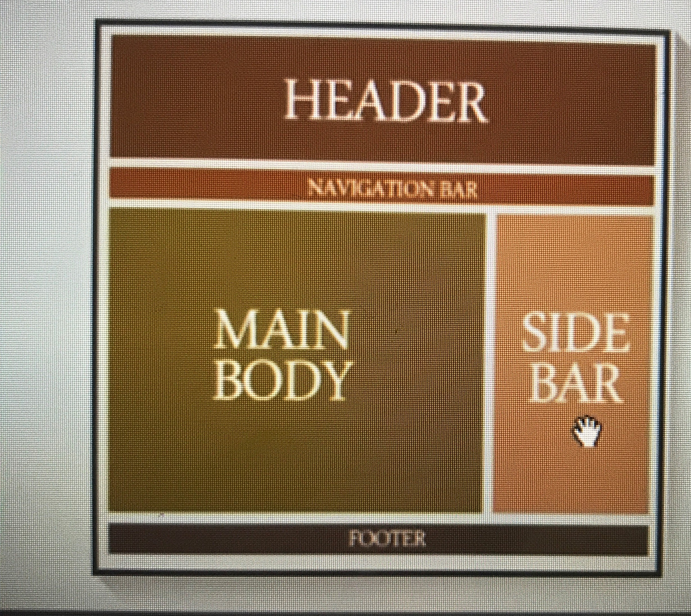

I dette projectet brukte vi mange mange nettsider/ kilder for å kunne komme i gang med projektet.
Vi har sett mange videoer om sementic tags i HTML og hvordan vi skal ta dem i CSS.
Og ikke minst hvordan kan vi koble mellom HTML og CSS.
Deretter har vi diskutert om hvordan vårt nettside skal se ut og tilsluttet bestemte vi at Home page skal være så rydde så mulig.
Derfor delte vi den til to deler.
Til høyre har vi personlig informasjon og til venstre generelt informasjon om personen.
Også helt opp på toppen til Høyre bestemte vi å linke de andre html.Pages vi har om person, som resume and protfolio.
Header
body
nav
aside
footer
.